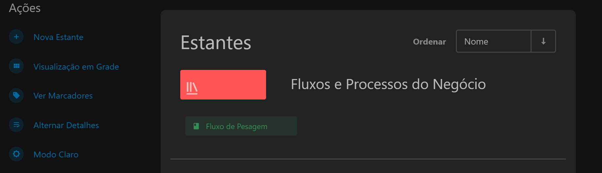
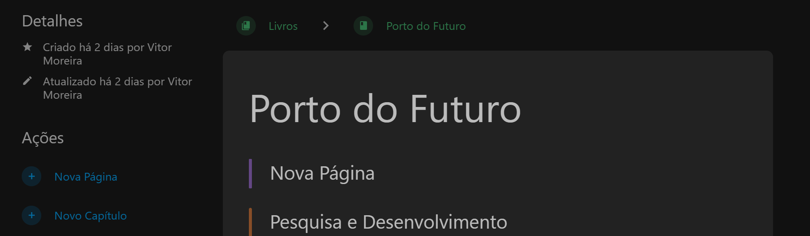
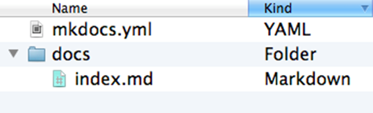
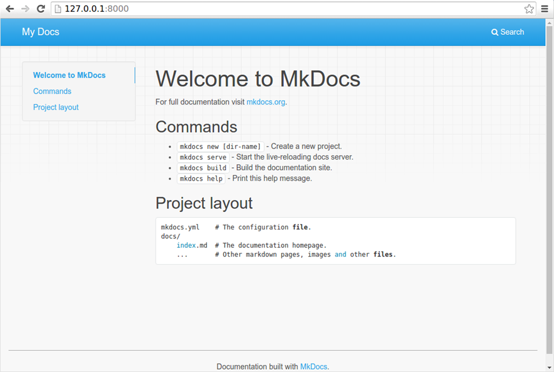

Documentação técnica
A documentação técnica é uma etapa essencial no ciclo de desenvolvimento de software (SDLC, do inglês Software Development Life Cycle), garantindo que todas as partes interessadas tenham um entendimento claro sobre o sistema. Ela facilita a comunicação, a manutenção e a escalabilidade do projeto, servindo como referência durante todo o processo.
Para a documentação técnica das aplicações desenvolvidas, a GETIN solicita que os desenvolvedores utilizem do projeto docs, onde são compiladas todas as documentações de soluções desenvolvidas para o Porto do Itaqui.
Dentro da Gerencia de Pesquisa, Desenvolvimento e Inovação, a documentação dos produtos tecnológicos se divide em: Aplicações Low Code e Aplicações de Alto nível. As documentações de projetos desenvolvidos para a EMAP são mantidas dentro do repositório Docs. O processo de documentação pode ser realizado tanto através de arquivos markdown utilizando a biblioteca mkdocs, quanto através da própria ferramenta de adição do sistema Docs.
Estrutura básica de uma documentação técnica
A estrutura básica de uma documentação técnica de software deve ser bem organizada e clara, para facilitar a compreensão dos leitores, sejam eles desenvolvedores, usuários finais ou outros stakeholders. Abaixo estão os elementos essenciais que geralmente compõem uma boa documentação técnica:
- Overview:
- Getting Started:
- Core componentes and Features
- Best pratices
- Integrations with external services
- Troubleshooting and suport
- Cases
Docs
O Docs é um sistema web desenvolvido para armazenamento e compartilhamento de documentações técnicas em formato de markdown das soluções de base tecnológica desenvolvidas para o Porto do Itaqui. O sistema é monitorado pela Gerência de Tecnologia da Informação (GETIN) e o acesso deve ser solicitado para a mesma via servicedesk.
Criando documentação no Docs
Para desenvolver a documentação do projeto no sistema Docs, como requisito é necessário a solicitação de acesso ao sistema via service desk.

Para criar uma nova estande (Documentação de projeto), o desenvolvedor deve selecionar a opção nova estante localizada no menu vertical ao lado esquerdo da tela.

Com a estante já criada, para adicionar e editar novas páginas à documentação, o usuário deve selecionar a opção novo capítulo no menu vertical localizado no lado esquerdo da tela.

A documentação deve ser escrita seguindo a sintaxe da linguagem Markdown. Para mais informações acesse a documentação oficial.
Documentação manual utilizando MkDocs
A documentação técnica "manual" do projeto deve ser feita em formato markdown e recomenda-se a utilização da biblioteca MKdocs para o desenvolvimento do arquivo.
MkDocs é um gerador de sites estáticos rápido, simples, voltado para a criação de documentação de projetos. Os arquivos de origem da documentação são escritos em Markdown e configurados com um único arquivo de configuração YAML.
Instalação do MkDocs
Com o vscode aberto e localizada no repositório do projeto que deve ser documentado, para instalar o MKDocs, rode o seguinte comando na linha de comandos do terminal.
pip install mkdocs
Criando um projeto docs
Para criar um novo projeto, execute o seguinte comando no terminal:
mkdocs new my-project
cd my-project

Há um único arquivo de configuração chamado mkdocs.yml e uma pasta chamada docs que conterá os arquivos de origem da sua documentação (docs é o valor padrão para a configuração docs_dir). Neste momento, a pasta docs contém apenas uma página de documentação, chamada index.md.
O MkDocs vem com um servidor de desenvolvimento integrado que permite visualizar sua documentação enquanto trabalha nela. Certifique-se de estar no mesmo diretório que o arquivo de configuração mkdocs.yml e, em seguida, inicie o servidor executando o comando:
mkdocs serve
Abra o endereço Para criar um novo projeto, execute o seguinte comando no terminal:

Construindo site
Para publicar a primeira versão da sua documentação MkLorum. Primeiro, construa a documentação com o seguinte comando:
mkdocs build
Isso criará um novo diretório chamado site. Para mais informações e detalhes sobre a utilização do Mkdocs, consulte: Documentação MkDocs
Tipos de Documentação
Documentação para aplicação Low Code
Low-code é uma abordagem inovadora ao desenvolvimento de software que permite a criação de aplicações de forma rápida e eficiente, utilizando ferramentas que minimizam a necessidade de codificação manual.
Essa metodologia é baseada no uso de interfaces visuais, componentes de arrastar e soltar, e automação para gerar códigos, permitindo que desenvolvedores e outros profissionais participem do processo de desenvolvimento sem necessariamente possuírem habilidades técnicas avançadas.
Os casos de uso de plataformas low-code são diversos e abrangem diferentes áreas de aplicação. Alguns dos principais incluem:
- 1️⃣ Desenvolvimento de Aplicações Empresariais
Plataformas low-code são amplamente utilizadas para criar aplicações empresariais voltadas para gestão de processos internos, como CRM, ERP, e sistemas de gestão de contratos. Esses sistemas podem ser personalizados de acordo com as necessidades específicas de cada organização.
- 2️⃣ Automatização de Processos de Negócio (BPA)
Empresas utilizam low-code para automatizar fluxos de trabalho manuais e repetitivos, aumentando a eficiência e reduzindo erros. Exemplos incluem aprovações de solicitações, processamento de pedidos e gestão de faturas.
- 3️⃣ Prototipagem e MVP (Produto Mínimo Viável)
Startups e equipes de inovação utilizam plataformas low-code para criar protótipos rápidos e MVPs, validando ideias de produtos antes de investir em desenvolvimento completo.
- 4️⃣ Integração de Sistemas
O low-code permite conectar diferentes sistemas e bases de dados, criando soluções integradas que melhoram a troca de informações entre departamentos ou organizações.
- 5️⃣ Criação de Portais e Aplicativos para Clientes
Muitas empresas criam portais web e aplicativos móveis para interação com clientes, como agendamentos, suporte ou monitoramento de serviços, usando plataformas low-code.
- 6️⃣ Análise de Dados e Relatórios Ferramentas low-code podem ser usadas para desenvolver dashboards e relatórios interativos, facilitando a tomada de decisão baseada em dados.
A documentação de low-code é uma coleção abrangente de recursos, diretrizes e instruções que facilitam o entendimento, a implementação e o uso eficaz de plataformas e ferramentas de desenvolvimento low-code de maneira eficiente, clara e concisa.
Documentação de aplicações web
A documentação técnica organiza informações essenciais para o desenvolvimento, manutenção e escalabilidade de projetos web.
📝 Principais Tipos de Documentação
-
1️⃣ Requisitos do Projeto
Define escopo, funcionalidades e tecnologias. -
2️⃣ Arquitetura do Sistema
Diagramas UML, estrutura de banco de dados e fluxo de dados. -
3️⃣ Guia de Configuração e Deploy
Passos para instalação, configuração e publicação do projeto. -
4️⃣ Documentação da API
Endpoints, métodos, parâmetros e respostas detalhadas (ex.: Swagger). -
5️⃣ Padrões de Código
Linting, convenções de nomeação e padrões de commits. -
6️⃣ Modelo de Banco de Dados
Diagramas ER e estrutura das tabelas.
🛠 Ferramentas Úteis
🔹 Markdown (GitHub Docs)
🔹 Swagger/OpenAPI (APIs)
🔹 Notion, Confluence (Colaboração)
🔹 Docusaurus (Sites de documentação)
✅ Boas Práticas
✔ Atualizar frequentemente
✔ Incluir exemplos claros
✔ Automatizar sempre que possível
Documentação bem feita melhora a colaboração e a manutenção do projeto! 🚀
Intruções (Diretrizes) para Documentação
| Documentação | Produto |
|---|---|
| Low Code | Intruções de documentação Low Code |
| Aplicação Streamlit | Intruções de documentação Web Ap |
| Aplicação Django | Intruções de documentação BI |